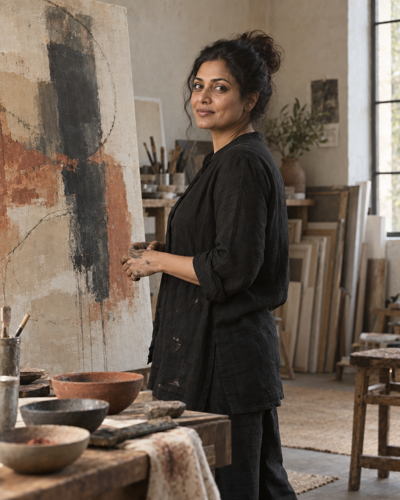

The artist
A practice rooted in attention.
Shalini is a contemporary painter working from an intuitive language of colour, gesture, and natural form. Her paintings ask what remains when a landscape becomes memory.
Each canvas is built through accumulation and erasure—earth pigments, charcoal, oils, and thin washes finding their way into a quiet, tactile whole.
Inside the process
Nothing begins with a finished picture.
There are only first marks, a remembered colour, and the willingness to follow. The work arrives slowly, through looking and listening.
Explore the work